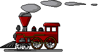
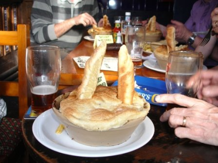

METRO DASHED Friday 26th May 06 
Click on train for photos Click on pie for video
13 made it, including the late arrival of the sat navs; Argumentative Aide and Crafty.
Yup, Keithee’s up for it, JayCee, Dasher, Stubbee, Bolt from the Blue, Argumentative Aide and Crafty Keith, Mid-week Tone, DCeen and McCeen, Malc Jay and Pedro.
1 o’clock and the message seeped through that the sat navs, Ade and Crafty, were going to be late again. Yes, unbelievably, Ade had gone on site at the last minute and was having difficulty finding his way back to the office. Did his Porsche break down??
The queue at the stoke station ticket desk was a mile long, so we trialled the fast ticket machines. Keithee, stroking his cloth cap and whippet, went through the saga of inserting his card and requesting a return ticket to Brum to show us how easy it was. After 20 attempts he realised he’d got no credit in his account and abandoned his quest. The picture of Keithee in his cloth cap would have been a stunner but sadly the old camera battery was as flat as his cap.
On the train, and sitting at different areas, Stubbee sat drooling with his hands fumbling under the table, with a huge grin on his face. 100% bollocks he was heard to mutter. Ah, what a relief. It was later discovered he was texting his wife on his mobile and confirming the pie he was hoping to devour later. Another photo opportunity had gone to waste, so a determined effort to recharge it somehow came top of the list.
Jessops (Behold, Jessops is mentioned) came to Yup’s rescue, well a young lady in Jessops actually, who kindly agreed to charge it up, with no charge!, while we attempted to find and eventually slurp at The W’Anchor in Digbeth. Sorry, the Big Brother tourettes syndrome slipped out there. The Anchor has been featured in the latest CAMRA mags, and as luck had it, they’d got a mini beer fest on this week just for us!! Not the most salubrious, but a wonderful find none the less. DCeen knew the area well from his earlier days selling his wares on each street corner, but the less said about the better.
Cards were issued at the pub and a stamp was put on it for every so many pints purchased. Getting the cards stamped proved tricky however. Somehow we managed to receive several cards, but each with only a couple of stamps on them. Combined, we may have got a dozen free pints, but somehow, only a couple of free pints were claimed.
Ade and Crafty finally arrived in Brum and were directed through the streets of Digbeth to join us without the sat navs. We couldn’t leave them now that they’d finally landed, so we had to have another pint just to be sociable of course, chosen from the many different choices adorning a huge blackboard. Many of Mr Tahoohigh’s favourites were displayed on the board so we rang him to antagonise him but he was on site, allegedly. No doubt he was in the Plough.
The locals warned us not to eat at the w’Anchor, oops, there it goes again; so Dasher and Malc Jay had sausage butties!! To give them credit they didn’t half look good. Time was running out, so the scheduled stop for food at the Church Inn at St Pauls got kicked in the head. So, we had another pint, and listened to Jaycee who recalled his run in, or ‘runs’ in, with the SAS, the unfriendly American ‘Sore Arse Security’ officers who body searched him at custom control in the big apple. Jaycee had endured the runs for several days. Evidently, they rummaged through his pants whilst they stood him up against a wall but they didn’t find anything!! With runny bottoms in mind we ran back through the City Centre, via Jessops and the runny ice cream van to Snow Hill station, eerrrhhhh.
With only one pub attempted and 2 hours gone, Pedro was grumbling again. He at least added that they were only comments. How relieved I felt!!
After some confusion at Snow Hill we ended up buying ‘Daytripper’ tickets which happened to be also valid for the later jaunt to Tipton. The itinery was quickly reviewed and Bilston Central was agreed to be the only stop time would allow. Dasher was first off the train with Malc Jay and before mugging an old soldier obtained directions to the Old White Rose, just a hundred yards or so away. There was 10 pence off a pint for CAMRA members. Whose round had it to be then lads? Mid week Tone and Pedro suddenly had many friends. I can’t remember the ales here so if anyone can jog my memory please shout. Time, wasn’t on our side unfortunately, so we set off again back to the Metro and off to Wolverhampton.
A swift change from one station to another in Wolverhampton saw us on our way to Tipton. After passing the shopping centre which was deader than Neck-end on a Saturday night, Desperate John sprinted ahead in search of the toilets at the Mad O’Rourkes pie factory, with memories of his time with the SAS fresh in his mind
Mad O’Rourkes had the typical west midlands spit and sawdust appearance. Lumphammer was the main ale available along with Cumberland ale. Crafty embarked on the lager!!
A platter starter of black pudding, garlic mushrooms and chicken wings was shared by Ade and Crafty, but was eventually tasted by all and sundry before the main event began. The Desperate Dan Cow Pies, complete with horns, were served out to the men amongst us, whilst the wimps (mentioning no names) went for either the ‘Daisy Potter Pie’ [Crafty], the Ruby Murray pie [Bolt & D Ceen/McCeen], the Wham Bam thank you lamb [Mid week T], or the ‘Barrymore Pie’ (faggots and peas)[Dashing]. Stubbee’s bullocks posed no threat and no doubt he could have gone on to devour a couple of Ali Gees pork pies if they’d only been available.
Jay Cee tried to get saucy with our waitress Janet, but the HP bottle did nothing for her. She awarded him with a Wimps certificate, not because of his efforts with the pie, but because he took his Viagra tablets with a J2O. Ade and Crafty also failed to impress her by sinking bottles of Smirnoff Ice.
Ade left early along with Crafty to prepare a luncheon meat feast for his slippery friends, and we all followed soon after settling up with miss grumpy drawers who accused us of avoiding a Daisy.
Back in Wolverhampton a small breakaway party explored the Tap & Spile whilst the old uns went home to bed. The Summer Lightening proved to be on top form, whilst the untouched Landlord did nothing for Jay Cee who was now feeling low after Janet’s brush off.
A deserted rucksack on the footway, cordoned off by the police, gave a stark reminder of the perils of modern day city life. This was followed by a gaggle of girls who bellowed ‘awright boys’ in a Wolverhampton dialect, as we passed them on route back to the station. We thought our luck was in until sadly, we realised we couldn’t get past their guide dogs.
So at last the pie and metro experience was over. There promises to be less dashing and more ale next time we return, culminating in a visit to the Bilash in Wolverhampton. I can’t wait to get back to proper grub.
Yup
(Enjoy yer baltis)
PS Anyone up for the minutes at Stone??